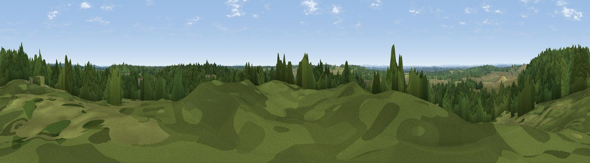

Burley Beacon
#43613 in England · top 81% of its area beats it · near BurleyWhere it is
The exact computed spot (SU 20245 02620). Click the marker for map links.
The view, rendered

A 360° render of this exact spot computed from the terrain model, tree cover and land cover — summer colours, afternoon light, calibrated against photographs of famous viewpoints. Real trees, hedges and buildings will differ in detail.
The panorama
Grey silhouette: terrain skyline in each direction (720 bearings, Earth curvature and refraction included). Dashed green: skyline with trees (+15 m) and buildings (+8 m) as obstacles. Blue strip: how far the ground is visible on each bearing.
Where the view opens
Wedge length = distance to the farthest visible ground on that bearing (vegetation-aware). Rings at 10, 25 and 50 km.
What fills the view
49% grassland · 49% woodland · 1% built-up ·
Angular shares of the visible panorama (visual magnitude), not map area. Landscape diversity 0.36 (0–1 Shannon).
Key numbers
More beautiful places nearby
The staircase of upgrades: each row has a higher view potential than everything closer. Driving times are estimates from straight-line distance, calibrated against real road routing — check an actual route before setting out.
| Place | Direction | Drive | Score |
|---|---|---|---|
| Viewpoint near Burley | NNW · 1 km | ~2 min | 41.0 |
| Viewpoint near Hightown | NW · 2 km | ~6 min | 43.3 |
| Viewpoint near Hurn | SW · 9 km | ~18 min | 53.7 |
| Warren Hill | SSW · 12 km | ~23 min | 60.1 |
| Viewpoint near Totland | SSE · 20 km | ~34 min | 75.0 |
| West High Down | SSE · 20 km | ~35 min | 79.8 |
| Tennyson Down | SE · 21 km | ~35 min | 83.2 |
| Viewpoint near Brook | SE · 25 km | ~40 min | 84.2 |
50.82277, -1.71395 · source: osm peak · position refined by local search. Computed location — check access rights before visiting.